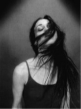
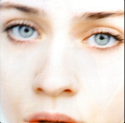
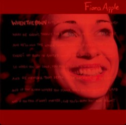
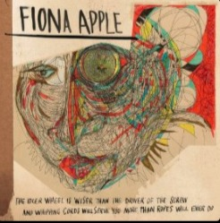

Carol Cabral
Apple McAfee Maggart (born September 13, 1977)
is an Anerican singer-songwriter, pianist and record
producer. Classically trained on piano as a child, Apple began composing her own songs when she was eight years old.
Her debut album, Tidal, written when Apple was seventeen, was released in 1996 and received a Grammy Award for
Best Female Rock Vocal Performance for the single "Criminal". She followed with When the Pawn...(1999), produced by
Jon Brion, which was also critically and commercially succesful and went certified platinum.

For her third album, Extraordinary Machine (2005), Apple again collaborated with Brion, and began recording the album
in 2002. However, Apple was reportedly unhappy with th production and opted not to release the record, loading fans to
erroneously protect Epic Records,believing that the label was withholding its release. The album was eventually re-
produced without Brion and released in October 2005 to critical acclaim. She released her fourth studio album, The Idler
Wheel..., in 2012, which was followed by an extensive tour of the USA. The album received universal praise.
To learn more about Fiona Apple, see her page at Wikipedia
Tidal
When the Pawn...
Extraordinary Machine
The Idler Wheel...
